A modern reimplementation of the legendary ReBirth RB-338 software synthesizer
Discover what's new in this innovative reimplementation
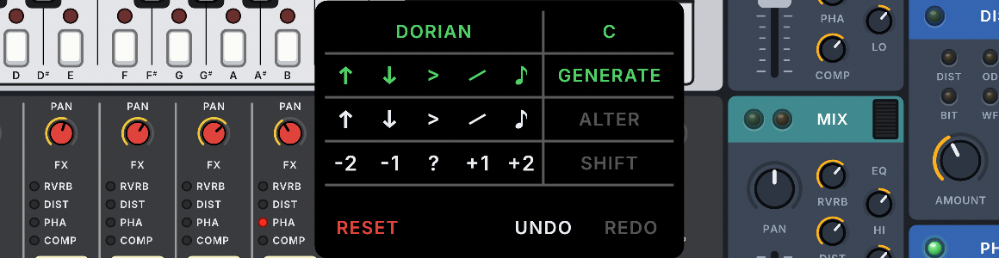
Advanced pattern generation on each bass synth with 37 scales and every key. Generate, alter, and shift patterns with precision. See which notes are available on the keyboard.
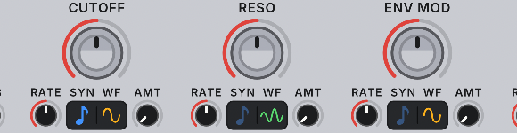
Add expression to your sound with LFOs on CUTOFF, RESO, ENV MOD, DECAY, and ACCENT. Control rate, amount, and choose between sine and random sine waveforms.
Add a sub oscillator to your 303s for deeper bass. Control its level independently to enhance the low-end presence in your patterns.
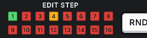
16 LEDs in the step editor for intuitive pattern navigation. Green shows the selected step, red shows pattern length, and yellow flashes the currently playing step.
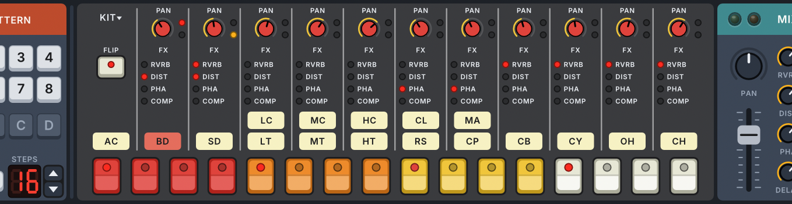
Press the Flip button to reveal a new panel where you can set the pan for each drum as well as choose to which effect it is routed. Click on a drum's name to preview it.
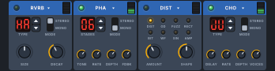
Effects have been completely overhauled. Any effect goes to any slot. New effects include Reverb, Chorus, Flanger, Phaser, Additional Distortion modes, Tape Delay, OTT, Master Limiter.
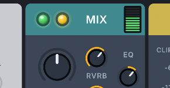
Control individual mixer channels with MUTE and SOLO buttons. Double-click to toggle all of a kind. Settings are preserved in .rbsx songs.
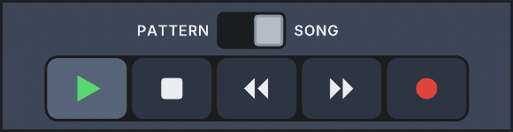
One set of settings for pattern and song mode. Knobs, faders, and effects stay consistent when switching modes.
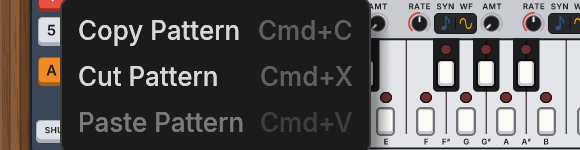
Copy, cut, and paste patterns with keyboard shortcuts. Supports steps, length, and shuffle settings with cross-synth compatibility.
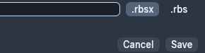
New format that saves ReBirth songs plus all GENERATE and LFO settings. Plain .rbs songs still work as before with Save As format options.
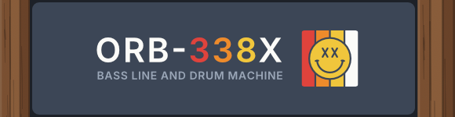
A new name, logo, and icon. Watch the letters of the logo animate on startup, followed by a soft flash on the icon, accompanied by a custom startup sound.
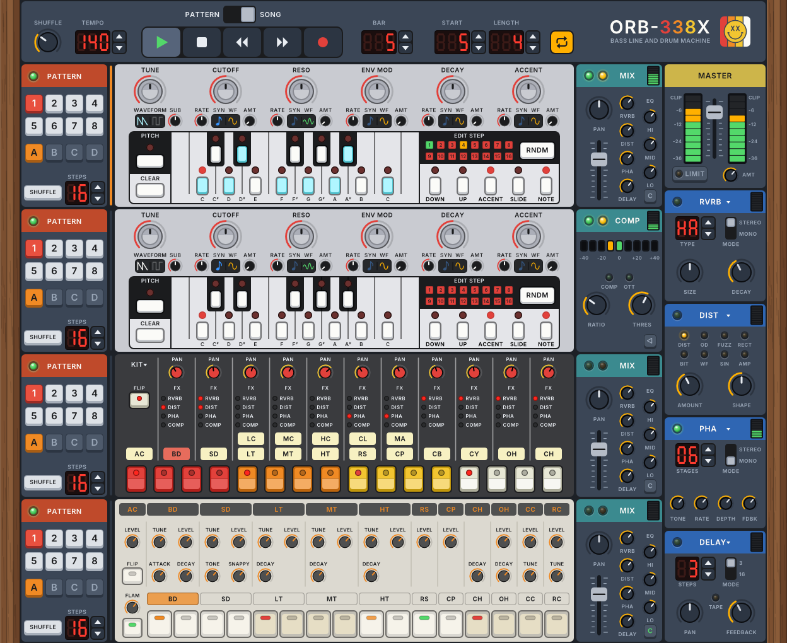
Double-click to reset knobs and faders. Quantized 303 Tune knobs now snap to semitones. Mix Mods by loading one to the 808, another to the 909.
Meet the people behind ORB-338X
The visionary behind ORB-338X, bringing modern enhancements to this legendary synthesizer with innovative features and meticulous attention to detail.
Original UI and additional concept work brought to you by Minikod, creator of the Recall and Remote series of VST3 and AU plugins for Windows and macOS.
Created the original OpenRB-338 fork that serves as the foundation for ORB-338X. Their work preserves the authentic sound and functionality of the classic ReBirth synthesizer.
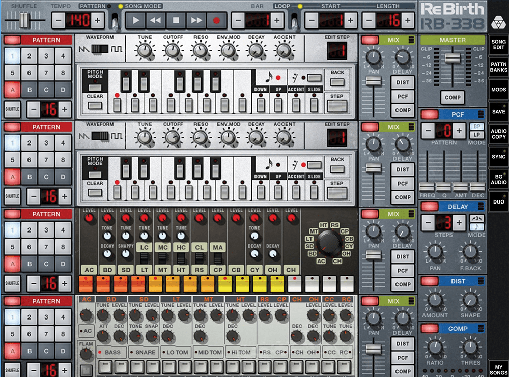
Built upon the legendary 1997 ReBirth RB-338 by Propellerhead Software. ORB-338X recreates this iconic instrument for modern operating systems while preserving its unique sound.
Learn more about the project
ORB-338X is distributed under the GPL License, ensuring the software remains free and open for all users.
You are free to use, modify, and distribute the software according to the license terms.
ORB-338X is a faithful reimplementation of the legendary 1997 ReBirth RB-338 software synthesizer for modern macOS, Linux, and Windows systems.
It combines authentic sound reproduction with modern enhancements and an intuitive interface.